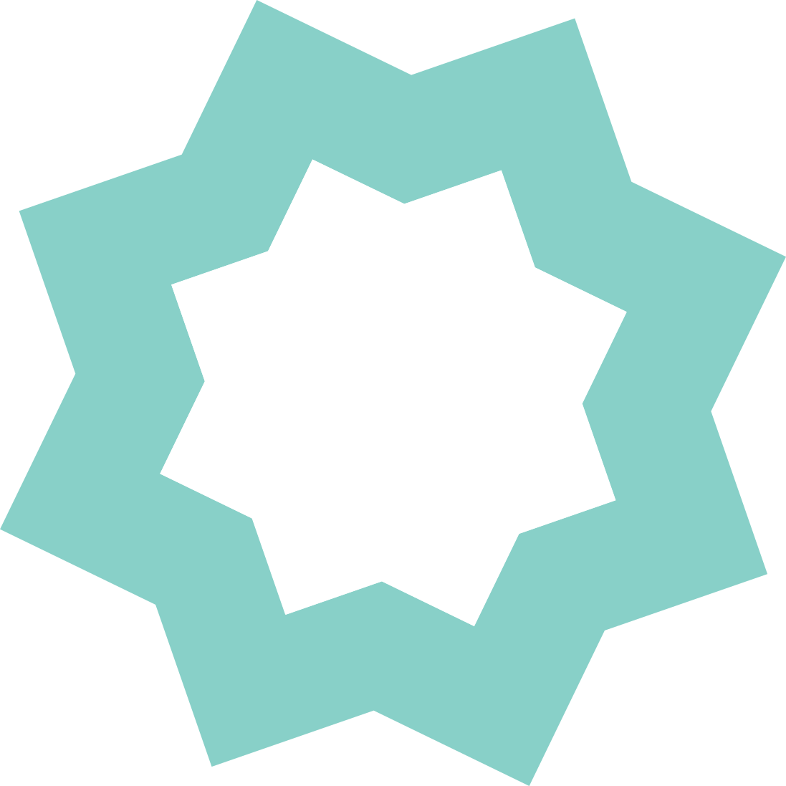
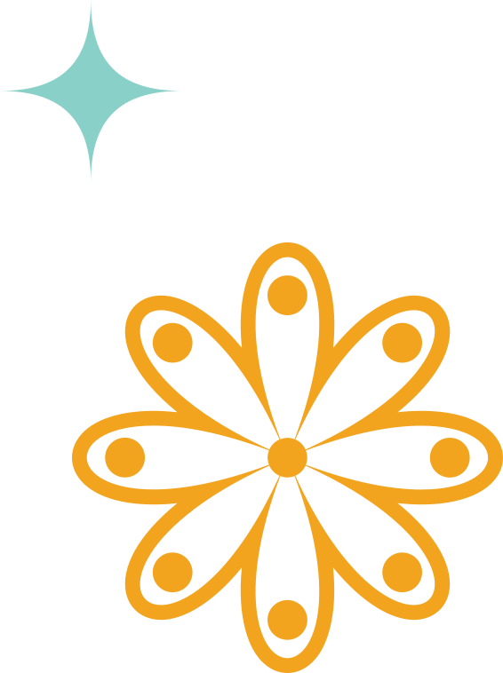
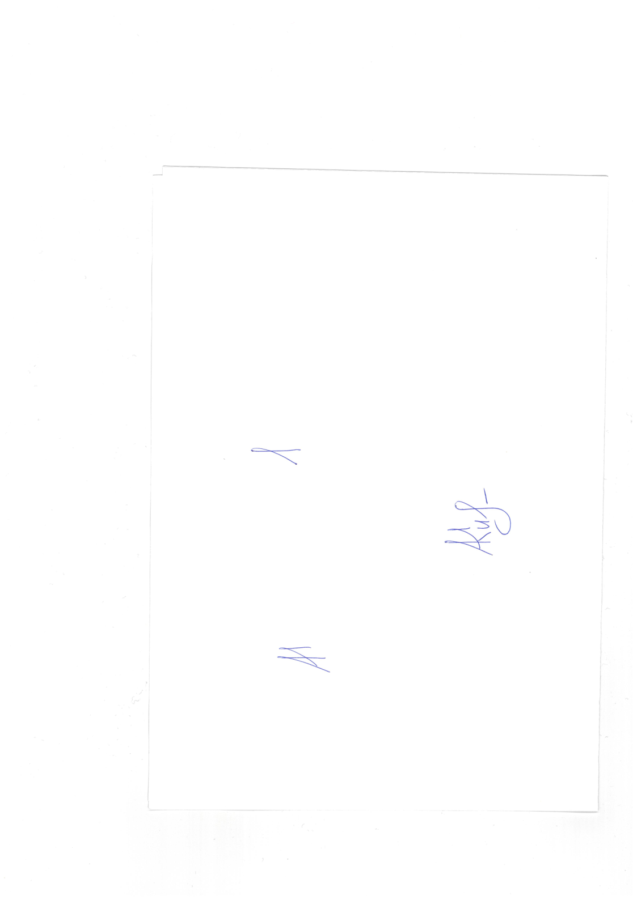

Уважаемая ИО_PLACEHOLDER!
Всероссийский студенческий форум «Китай Бизнес Культура» выражает Вам благодарность за участие в форуме, состоявшемся 11 апреля 2026 года на площадке Высшей школы менеджмента СПбГУ (кампус «Михайловская дача», г. Санкт-Петербург).
Форум «Китай Бизнес Культура» — федеральная очная и онлайн-площадка, объединяющая студентов и молодых специалистов из более чем 80 регионов Российской Федерации. Программа формируется совместно с ведущими университетами и индустриальными партнёрами и включает панельные дискуссии, экспертные сессии и практико-ориентированные форматы по обмену опытом и профессиональными знаниями в контексте российско-китайского сотрудничества.
В рамках форума Вы приняли участие в работе трека «ТРЕК_PLACEHOLDER», став частью профессионального диалога студентов, молодых специалистов и экспертов, заинтересованных в развитии российско-китайского взаимодействия.
Благодарим Вас за проявленный интерес и вовлечённость. Уверены, что полученный опыт, знания и контакты станут основой для Вашего дальнейшего профессионального и личностного развития.
Желаем Вам успехов и новых достижений.
